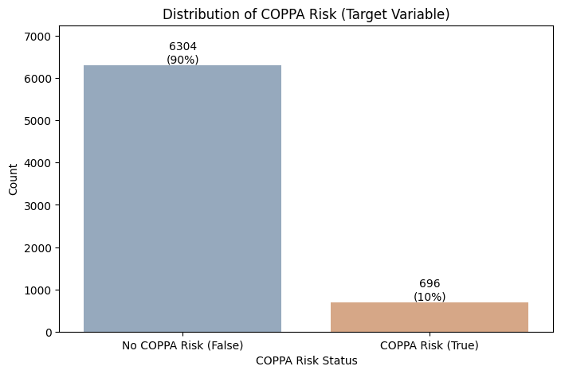
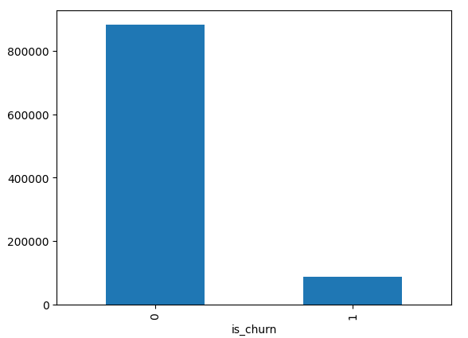
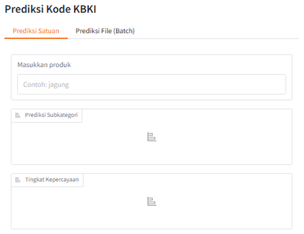
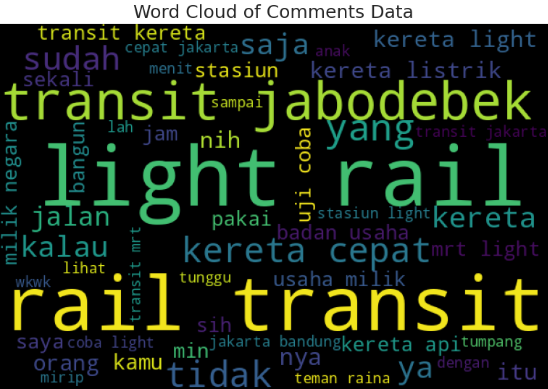
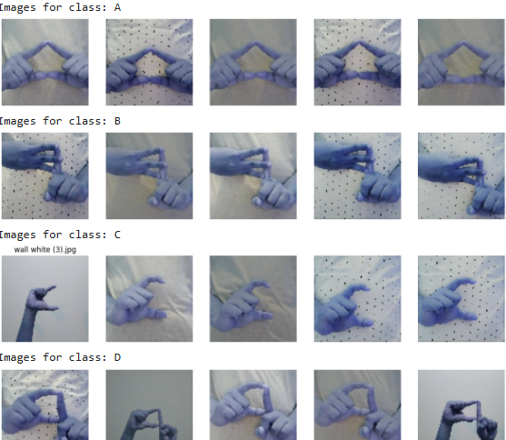
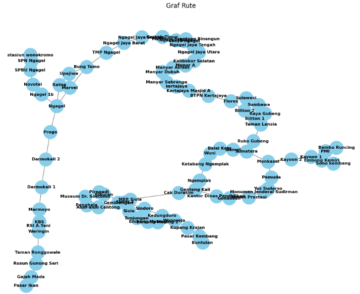
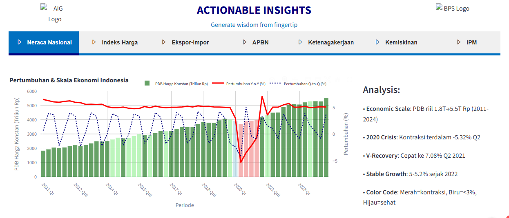
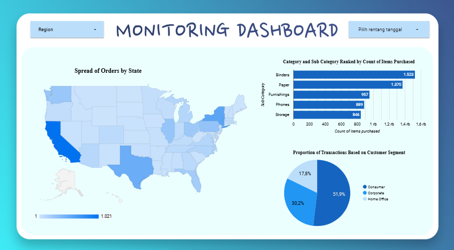

Machine learning model to detect digital applications potentially violating children's privacy regulations using CatBoost. The model applies Mutually Disjoint Dataset, hyperparameter optimization, and threshold optimization to improve minority-class detection on highly imbalanced data.

Data aggregation and machine learning modeling for customer churn prediction using a large-scale KKBOX dataset.

Initialization of product classification system based on KBKI (Indonesia’s Standard Commodity Classification) using H2O AutoML, including data preprocessing, modeling, evaluation, and prototype deployment with Gradio.

NLP-based sentiment analysis of LRT Jabodebek to evaluate public perception, with 86% accuracy using TF-IDF and SVM in Python.

Machine learning model to classify BISINDO (Indonesian Sign Language) letters based on hand images using HOG and SVM, achieving 77% accuracy on non-augmented data in Python.

Python-based program simulating route guidance for public transport "Wira Wiri Surabaya".

Early-stage development of a Streamlit-based dashboard analyzing Gross Domestic Product (GDP), inflation, trade, poverty, employment, and human development indicators.

Dashboard visualizing top products, customer segments, and geographic sales distribution.